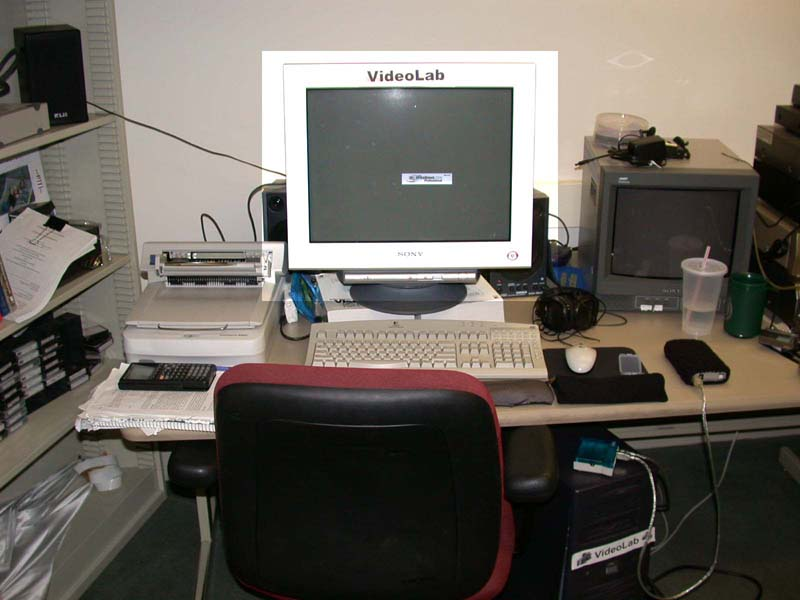
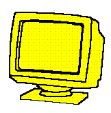
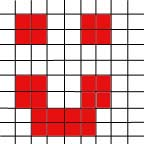

The Monitor
The Monitor 

Notice that in this picture of my desk part of the image is brighter than the rest of it, as if a bright light were being pointed at that part of the room. The part of the computer shown in this brighter region is called the monitor. The monitor is similar to a tv in that it shows color images on a flat screen. The monitor is used by the computer to give the person using the computer a visual picture of what is being stored and computed inside.
The monitor screen is made up of a bunch of tiny little squares called "pixels." By coloring each square with a different color, images are formed. For example, the picture below and to the right of this paragraph shows a grid of big pixels. By coloring some of these pixels red and some of them white, I was able to make a smiley face.
 